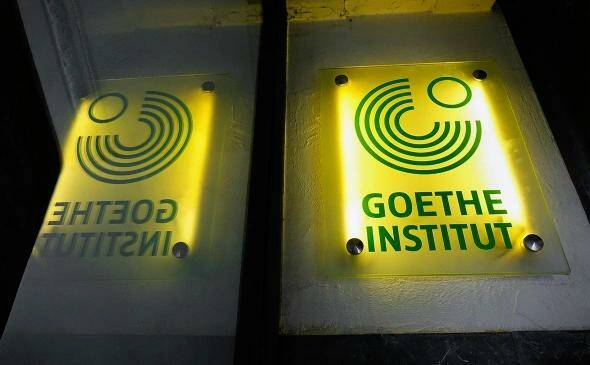

О прекращении занятий до завершения курса студентов уведомили по электронной почте. О том, что число сотрудников учебного заведения из-за решения Москвы придется сократить, писала Sueddeutsche Zeitung.Немецкий институт Гёте в Санкт-Петербурге приостановил обучение, пишет «Фонтанка» со ссылкой на студентов и разосланное им уведомление на электронную почту.
Учебное заведение в рассылке сообщило о досрочной приостановке языковых курсов и экзаменов с 1 июня и выразило сожаление, что студенты не смогли пройти курс до конца. О том, как институт будет работать осенью, в заведении пообещали рассказать позднее.
Одна из студенток сказала изданию, что курс должен был завершиться 17 июня, а о прекращении обучения учащимся объявили прямо на занятиях 27 мая.В сообщении учебного заведения от 11 мая, размещенном в телеграм-канале, говорилось, что институт ушел на «летний перерыв», но остается открытым, в том числе для посещения библиотеки и сдачи экзаменов.В конце марта Институт Гёте сообщал о блокировке счетов в России. МИД России объяснил это ответом на аналогичные действия немецких властей в отношении Российского дома науки и искусства в Берлине.